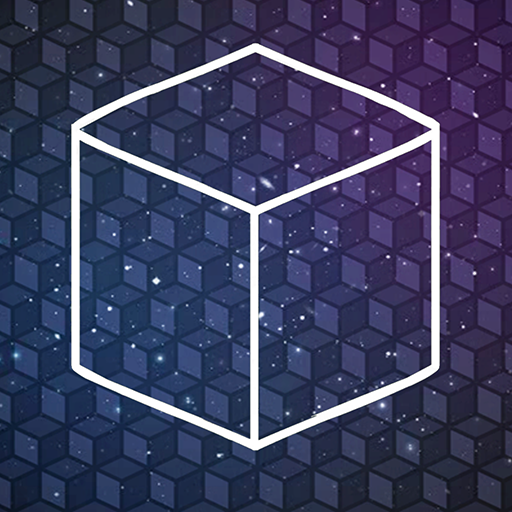

“Unfold the story and mysteries behind the cubes.”
Cube Escape: Seasons é o primeiro jogo da série Cube Escape e um dos títulos responsáveis por estabelecer a atmosfera misteriosa que se tornaria característica do universo Rusty Lake. A aventura acontece em diferentes períodos da vida de uma mulher chamada Laura Vanderboom. O jogador precisa explorar uma casa, resolver enigmas e observar cuidadosamente os acontecimentos enquanto viaja por diferentes estações do ano. Cada ambiente guarda pistas relacionadas ao passado de Laura e aos misteriosos acontecimentos de Rusty Lake.
A história começa em 1964, quando Laura Vanderboom está sozinha em uma casa misteriosa. O jogador precisa explorar cada cômodo e encontrar objetos que ajudam a revelar o que aconteceu naquele lugar. Conforme as pistas são descobertas, a narrativa passa por diferentes momentos do ano — primavera, verão, outono e inverno — mostrando acontecimentos importantes da vida de Laura. À medida que Laura revisita suas memórias, acontecimentos aparentemente desconectados começam a formar uma história maior. Objetos, fotografias, personagens e acontecimentos sobrenaturais revelam que existe algo muito mais profundo por trás da casa. No final, o jogador percebe que as memórias de Laura e os misteriosos cubos estão diretamente relacionados aos acontecimentos que cercam Rusty Lake.